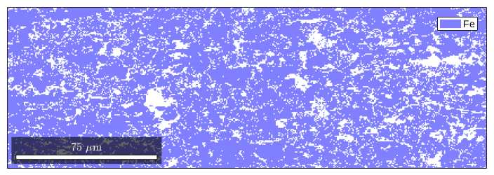
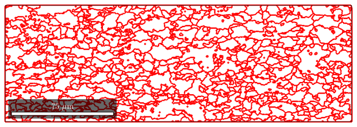
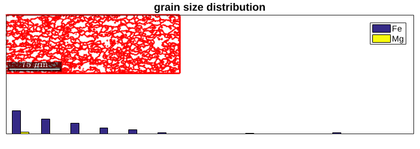

Analysis of single orientation measurement.
% specify crystal and specimen symmetry CS = {... 'not Indexed',... crystalSymmetry('m-3m','mineral','Fe'),... % crystal symmetry phase 1 crystalSymmetry('m-3m','mineral','Mg')}; % crystal symmetry phase 2
fname = fullfile(mtexDataPath,'EBSD','85_829grad_07_09_06.txt'); ebsd = loadEBSD(fname,'CS',CS,'interface','generic',... 'ColumnNames', { 'Phase' 'x' 'y' 'Euler 1' 'Euler 2' 'Euler 3' 'MAD' 'BC'},... 'Columns', [2 3 4 5 6 7 8 9],'Bunge','IgnorePhase',0); plotx2east
plot(ebsd('Fe')) grains = calcGrains(ebsd,'angle',10*degree)
grains = grain2d
Phase Grains Pixels Mineral Symmetry Crystal reference frame
1 946 48184 Fe m-3m
2 466 1180 Mg m-3m
boundary segments: 20718
triple points: 2198
Properties: GOS, meanRotation
The reconstructed grains strongly depend on the specified threshold angle. These angles can be specified seperatly for different phases.
grains = calcGrains(ebsd,'angle',[0 10 5]*degree)
grains = grain2d
Phase Grains Pixels Mineral Symmetry Crystal reference frame
1 946 48184 Fe m-3m
2 470 1180 Mg m-3m
boundary segments: 20726
triple points: 2204
Properties: GOS, meanRotation
Plot grain-boundaries
plot(grains.boundary,'color',[0.25 0.1 0.5]) %TODO: internal grain boundaries hold on, plot(grains.boundary,'linecolor','red','linewidth',2)
on application of this would be to take a look on the grainsize distribution
hist(grains)
area(grains); perimeter(grains); shapeFactor(grains);
| DocHelp 0.1 beta |